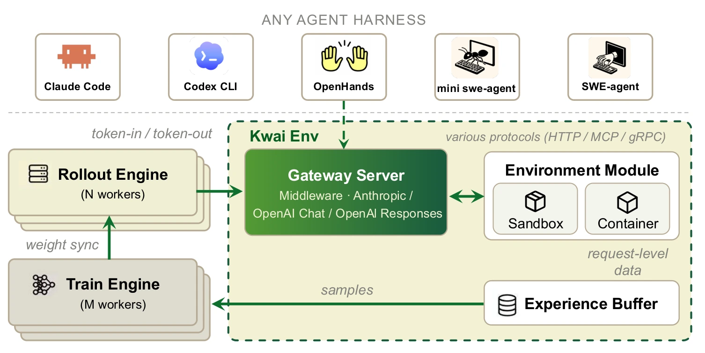

An open-weight coding model is judged twice: once on benchmarks, and once on whether it behaves sensibly at the tool interface. The second is where deployed agents actually fail — not by writing wrong code, but by issuing seventy tool calls in one turn and emitting tags the parser cannot read.
一个开放权重的编程模型会被评判两次：一次看基准，一次看它在工具接口处的行为是否得体。真正让已部署智能体失败的往往是后者——不是写错代码，而是在一个回合里发出七十次工具调用，并输出解析器读不懂的标签。
This release is a 35B-A3B mixture of experts built on Qwen3.6-35B-A3B, post-trained with 127K supervised examples followed by reinforcement learning. The model card is unusually useful because it reports the failures alongside the scores.
本次发布是一个基于 Qwen3.6-35B-A3B 的 35B-A3B 混合专家模型，先用 127K 监督样本后训练，再进行强化学习。这份模型卡格外有用，因为它把失败和分数一起报了出来。
The number that sets the tone is 9.34% to 0.28%: the rate of malformed tool tags before and after the reward shaping described below. Under a binary success reward the model did not merely fail to improve — it collapsed, with some turns issuing more than seventy parallel tool calls.
定调的那个数字是 9.34% → 0.28%：畸形工具标签率在下文所述的奖励整形前后的变化。在纯二元成功奖励下，模型不只是没能提升——它直接崩溃了，部分回合发出超过七十次并行工具调用。
35B total / 3B active MoE built on Qwen3.6-35B-A3B, post-trained with 127K supervised examples then RL, keeping the V2.5 infrastructure: token-consistent rollout and training, truncated importance weights, checked environments.
基于 Qwen3.6-35B-A3B 的 35B 总参数 / 3B 激活 MoE，经 127K 监督样本后接 RL 训练，沿用 V2.5 的基础设施：token 一致的 rollout 与训练、截断重要性权重、经过校验的执行环境。
A binary reward caused collapse — some turns exceeded 70 parallel tool calls. Penalties on excessive calls, failures, empty tool blocks and repetition produced ten stable epochs; malformed tool tags fell from 9.34% to 0.28%.
二元奖励导致训练崩溃——部分回合的并行工具调用超过 70 次。对过量调用、失败、空工具块与重复的惩罚换来了十个稳定 epoch；畸形工具标签率从 9.34% 降到 0.28%。
69.4 on SWE-bench Verified, 63.0 Multilingual, 45.96 Pro, all measured through one in-house pipeline (Claude Code 2.1.195, pass@1, 256k context) rather than copied from each model’s published card.
SWE-bench Verified 69.4、Multilingual 63.0、Pro 45.96，全部由同一套内部流水线实测（Claude Code 2.1.195、pass@1、256k 上下文），而非照抄各模型已发布的卡片。
What a binary reward teaches二元奖励教会了模型什么
Give RL a pure success/failure reward and the shortest path to a pass is often to try everything. The card describes exactly that: tool-call volume exploding until single turns contained more than seventy parallel calls, a rational response to a reward that only asks whether something eventually worked.
给 RL 一个纯粹的成功／失败奖励，通往通过的最短路径往往是全都试一遍。模型卡描述的正是这一点：工具调用量不断膨胀，直到单个回合内出现超过七十次并行调用——对于一个只关心最后有没有成的奖励来说，这是理性的反应。
Format degraded alongside it. Malformed tool tags rose to 9.34% and continuous repetition within a single turn appeared in 0.34% of cases — small in absolute terms, but fatal for an agent whose next action depends on parsing its previous one.
格式也随之退化。畸形工具标签率升至 9.34%，单回合内的连续重复出现在 0.34% 的样本中——绝对值不大，但对一个下一步动作依赖解析上一步输出的智能体而言是致命的。
The remedy was to make the reward describe behaviour rather than only outcome: penalties for excessive calls, for failed calls, for empty tool blocks and for repetition. With those in place the run held for ten stable epochs, malformed tags fell to 0.28% and the repetition rate to zero.
补救办法是让奖励描述行为而不只是结果：对过量调用、失败调用、空工具块和重复施加惩罚。加上这些之后，训练稳定地维持了十个 epoch，畸形标签率降到 0.28%，重复率降到零。


Measuring peers on the same rig用同一套装置测量同行
Model comparison in this space is usually a table of numbers copied from other people’s cards, each produced under a different harness, context budget and serving configuration. This card instead downloads public peer weights and re-runs them through one in-house pipeline.
这个领域的模型对比，通常是一张从别人卡片上抄来的数字表，而每个数字都产生于不同的框架、上下文预算与服务配置。这份卡片改为下载公开的同行权重，用同一套内部流水线重跑。
That choice trades coverage for comparability. Every model gets Claude Code 2.1.195, pass@1 and a 256k context, so a gap between two rows is at least attributable to the model rather than to the scaffold — at the cost of the results describing one particular deployment.
这个选择是以覆盖度换可比性。每个模型都使用 Claude Code 2.1.195、pass@1 与 256k 上下文，因此两行之间的差距至少可以归因于模型而非框架——代价是这些结果只描述某一种特定部署。
The further cost is that most tests run once unless an obvious error shows up. Single-run results cannot resolve small gaps, and the card does not claim they do. Differences of a point or two should be treated as unresolved.
另一个代价是多数测试只跑一次，除非出现明显错误。单次运行无法分辨微小差距，卡片也没有声称可以。一两分的差异应当被视为未定。
Model evaluations模型评测
Published results, with the evaluation setting kept alongside each comparison. Scores are percentages; higher is better. Bold marks the highest reported value in each row, including ties.保留原始评测条件；分数单位为百分比，越高越好。粗体表示每行已报告数值中的最高值（含并列）。
| Benchmark | KAT-Coder V2.5-Dev | Qwen3.5-27B | Qwen3.6-35BA3B | Gemma4-31B | Qwen3.5-35BA3B | Ornith-1.0-35B | Gemma4-26BA4B | Qwen3-Coder-30B |
|---|---|---|---|---|---|---|---|---|
| SWE-bench VerifiedRepository issue resolution | 69.4% | 68.6% | 64.4% | 60.6% | 58.6% | 55.8% | 35.8% | 31.8% |
| SWE-bench MultilingualMultilingual repository tasks | 63.0% | 57.7% | 57.0% | 49.3% | 47.7% | 51.7% | 27.3% | 20.7% |
| SWE-bench ProSoftware engineering | 46.0% | 42.1% | 40.6% | 33.0% | 38.0% | 34.5% | 9.6% | 19.8% |
| Terminal-Bench 2.1Average of Terminus-2 and Claude Code | 41.0%32.6 / 49.4 | 34.8%41.6 / 28.1 | 32.0%34.8 / 29.2 | 32.6%30.3 / 34.8 | 26.1%26.4 / 25.8 | 36.0%36.0 / 36.0 | 20.9%27.3 / 14.6 | 13.5%10.1 / 16.9 |
| PinchBenchOpenClaw agent tasks | 93.4% | 90.7% | 92.2% | 85.5% | 88.8% | 91.6% | 82.0% | 72.3% |
| SciCodeScientific programming | 44.2% | 25.6% | 37.5% | 33.2% | 27.7% | 30.3% | 30.8% | 18.3% |
| KAT-Code-BenchCoding evaluation | 46.2% | 44.8% | 42.8% | 37.9% | 35.9% | 33.1% | 22.1% | 15.2% |
All results are in-house re-evaluations, generally one run per benchmark; they are not the peers’ official scores. All use pass@1 and 256k context. SWE and KAT-Code use Claude Code 2.1.195 (temperature 1.0, top_p 0.95); terminal tests use Terminus-2 / Claude Code (0.7, 1.0); PinchBench uses OpenClaw 2026.3.13 (0.7, 1.0); SciCode uses 0.6, 1.0. The model card reports harness/tool mismatches affecting several peers. Small gaps should not be read as statistically established rankings. Source data
Where it lands落在什么位置
Under that pipeline the model scores 69.4 on SWE-bench Verified, 63.0 on Multilingual and 45.96 on Pro. Each measures something different: repository repair against tests, the same across languages, and harder repository tasks under a stricter protocol.
在这套流水线下，模型在 SWE-bench Verified 上得 69.4，Multilingual 得 63.0，Pro 得 45.96。三者测的是不同的东西：对照测试的仓库修复、跨语言的同类任务，以及协议更严格的困难仓库任务。
What makes the release interesting is the pairing of those scores with behavioural measurements. A model can post a respectable SWE-bench number while emitting unparseable tool calls at a rate that makes it unusable inside a real agent loop; reporting both should be the convention.
让这次发布有意思的，是这些分数与行为指标的成对呈现。一个模型完全可以在 SWE-bench 上拿出体面的数字，同时以某一频率输出无法解析的工具调用，高到在真实智能体循环里根本没法用；两者同时报告才应该成为惯例。
It is also worth noting what is not claimed. These are single-run reproductions under a stated harness, and peer scores here can differ from the same models’ official reports — a reminder that an agent’s score is a property of a system, not of a checkpoint.
还需要说明哪些是没有被声称的。这些是在既定框架下的单次复现，同行分数也可能与同一模型官方报告中的数字不同——这提醒我们：智能体的分数是系统的属性，而不是某个 checkpoint 的属性。
Open weights as an inspectable artifact把开放权重当作可检验的对象
The value of open weights is not only cost. A 3B-active MoE can be served cheaply, but more importantly it can be instrumented: you can reproduce the harness, watch the tool-call distribution yourself, and check whether the reported failure modes appear in your workload.
开放权重的价值不只是成本。3B 激活的 MoE 可以低成本部署，但更重要的是它可以被插桩：你可以复现那套框架，自己观察工具调用分布，并检查报告里的失败模式是否出现在你的工作负载中。
That is the right use of this card. It is a starting point for studying long-horizon behaviour under a chosen harness, not independent evidence of universal superiority — the rankings come from the same team that built the model.
这才是这张卡片的正确用法。它是研究特定框架下长程行为的起点，而不是“普遍更优”的独立证据——毕竟排名来自构建该模型的同一团队。
For anyone selecting a model the sequence is straightforward: reproduce the evaluation protocol, then check behaviour on the actual workload. Benchmark scores tell you where to look; tool-call statistics and format-error rates tell you whether the model will survive contact with your tool interface.
对任何需要选型的人来说，步骤很直接：先复现评测协议，再在真实工作负载上检查行为。基准分数告诉你该往哪儿看，而工具调用统计与格式错误率告诉你这个模型能否扛住与你的工具接口的接触。
Paper & authors
Model release 2026
Cite this work
@misc{kwaipilot2026katcoderdev,
title = {KAT-Coder-V2.5-Dev},
author = {{Kwaipilot}},
year = {2026},
howpublished = {Hugging Face model card},
url = {https://huggingface.co/Kwaipilot/KAT-Coder-V2.5-Dev},
note = {Accessed 2026-09-21}
}
@misc{huang2026katcoderv25technicalreport,
title = {KAT-Coder-V2.5 Technical Report},
author = {Bo Huang
and Fengxiang Li
and Hao Xu
and Haoyang Huang
and Hongyi Fu
and Jinhua Hao
and Kun Yuan
and Minglei Zhang
and Pengcheng Xu
and Shiyang Liu
and Wenhao Zhuang
and Yuze Shi
and Zongxian Feng
and Chao Wang
and Cheng He
and Chongling Rao
and Deyu Cao
and Fan Yang
and Gang Xiong
and Haochen Liu
and Jiabao Li
and Jian Liang
and Jinghui Jia
and Jingwen Chang
and Jun Du
and Junyu Shi
and Min Li
and Mingqi Wu
and Qiang Gao
and Shangpeng Yan
and Shaotong Qi
and Shu Xu
and Shuo Zhou
and Tiankuo Xu
and Tong Zheng
and Weilun Zhao
and Xiancheng Meng
and Xianda Sun
and Xiaoyu Jiang
and Xunhao Jia
and Yao Xia
and Yimeng Xu
and Yinghan Cui
and Yingpeng Chen
and Yiwen Ning
and Yong Wang
and Yuxuan Sun
and Zhongsheng Liu
and Ming Sun
and Cheng Luo
and Chen Yang
and Han Li
and Kun Gai},
year = {2026},
eprint = {2607.05471},
archivePrefix = {arXiv},
primaryClass = {cs.SE},
url = {https://arxiv.org/abs/2607.05471}
}